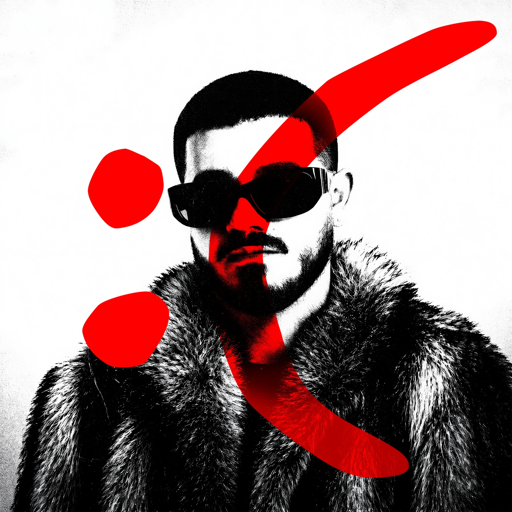

AfroPX · Música · Archivo oficial
LANZA
MIENTOS
El último lanzamiento, los temas que ya están fuera y todos los enlaces oficiales. Sin intermediarios.
↓01Último lanzamiento

Próximamente
A la gente buena le pasan cosas malas
Doce canciones sobre duelo, deseo, contradicción y supervivencia. Entra en la página del álbum para preguardarlo y encontrar todos sus enlaces oficiales.
Entrar al lanzamiento ↗02Archivo
Toda la música.
Un solo lugar.
Accede al nuevo proyecto o abre directamente los lanzamientos anteriores en Spotify.
03Enlaces oficiales